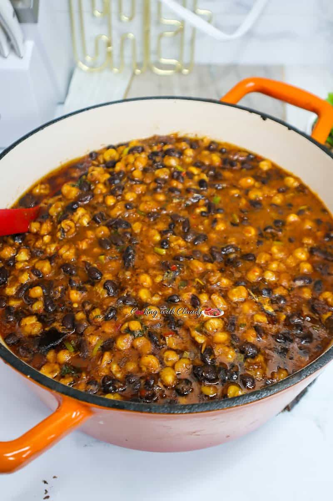

Beans

Description
Black-eyed peas, usually called just "Beans" is a delicate intercontinental meal that is loved by a vast amount of people globally.
The method of preparation varies globally and per preference, but it's still a mouth watering dish.
One unique quality about beans is that it can be served with anything of your choice, and not ony limited to rice. In fact, one can eat it alone as a full meal and is still enjoyable.
Ingredients
- Black-eyed peas
- Oil
- Fish
- Meat (Optional)
- Maggie
- Salt
- Onions (Optional)
- Pepper
- Tomato paste (Optional)
Steps
- Add water to Black-eyed peas and boil until soften to your desired texture
- In a separate pot, add oil on low heat
- Add blended pepper and onions and stir fry for 5mins
- Add Fish/pre-cooked meat, pre-cooked peas and maggie to taste
- Leave to cook for 2mins
- Serve with anything of your choice or alone
Home